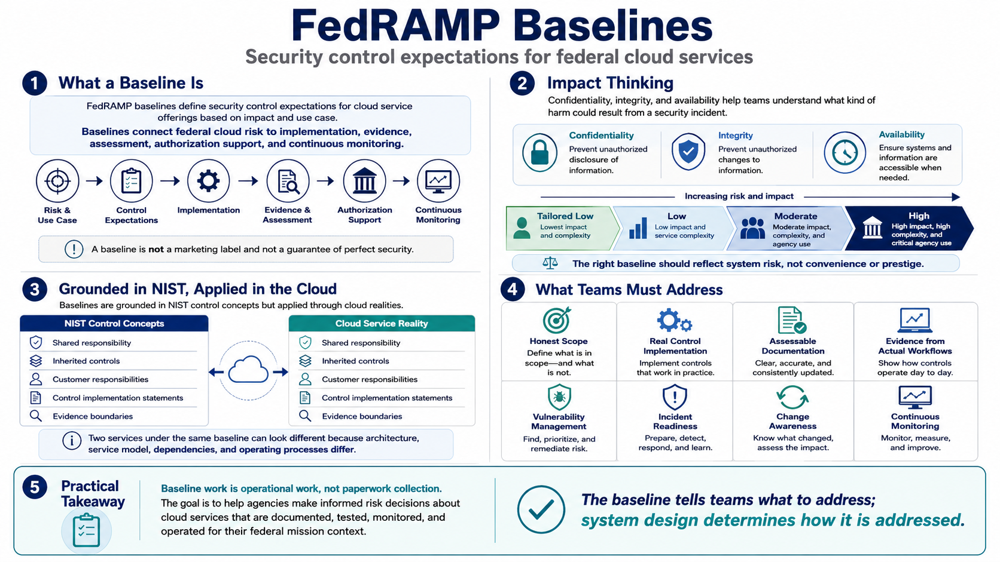

Course Summary and Key Takeaways
Connecting to LMS... Progress: in progress

Narration
FedRAMP baselines define security control expectations for cloud service offerings based on impact and use case. They connect federal cloud risk to implementation, evidence, assessment, authorization support, and continuous monitoring. A baseline is not a marketing label and not a guarantee of perfect security. It is a structured starting point for demonstrating that a cloud service is protected and operated appropriately for federal use.
Impact thinking is the foundation. Confidentiality, integrity, and availability help teams understand what kind of harm could result from a security incident. Low, tailored low-impact, Moderate, and High concepts help align security expectations with data sensitivity, mission impact, service complexity, and agency use. The right baseline should reflect system risk, not convenience or prestige.
Baselines are grounded in NIST control concepts but applied through the realities of cloud architecture. Shared responsibility, inherited controls, customer responsibilities, control implementation statements, and evidence boundaries all matter. Two services under the same baseline can look different because their architectures, service models, dependencies, and operating processes are different. The baseline tells teams what to address; the system design determines how it is addressed.
The practical takeaway is simple: baseline work is operational work. It requires honest scope, real control implementation, assessable documentation, evidence from actual workflows, vulnerability management, incident readiness, change awareness, and continuous monitoring. The goal is not to collect paperwork. The goal is to help agencies make informed risk decisions about cloud services that are documented, tested, monitored, and operated for their federal mission context.